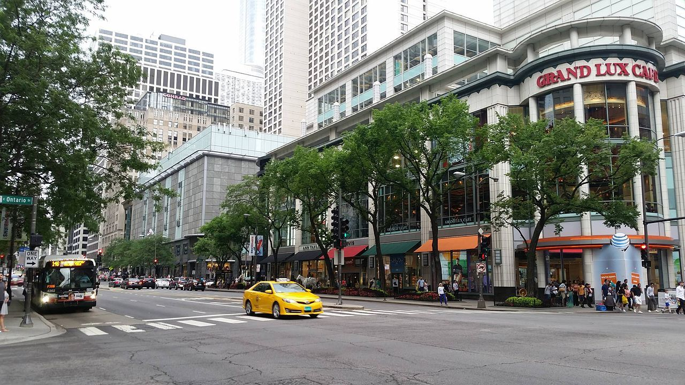

chapter2.1--handout
Background Information
The Latin Quarter of Paris
Cohn向Jake表示了自己迫切渴望离开巴黎，离开拉丁区，他对这个地方已经厌恶至极（"I'm sick of Paris, and I'm sick of the Quarter"）, 这就介绍到这本小说的主要情节发生地之一——巴黎拉丁区啦~
拉丁区处于巴黎五区和六区之间，以巴黎索邦大学（Université Paris-Sorbonne）为中心，从圣日耳曼德佩区（Saint-Germain-des-Prés）到卢森堡公园（Jardin du Luxembourg）. 拉丁区这个名字来源于中世纪这里以拉丁语做为教学语言。周围矗立着众多巴黎的高等学府（higher education establishments），所以也是巴黎最有文化和历史气息的地方。
而以拉丁区为核心的这片区域也被称为“左岸”（the Left Bank, 法语名是La Rive Gauche）, 也就是塞纳河的南边（south of the River Seine），北边则是“右岸”。这里要补充一点关于塞纳河的地理知识：塞纳河由东向西流经巴黎，在市中心走了一条抛物线——从东南流入，穿过圣路易岛、西堤岛，越过卢浮宫，到亚历山大三世大桥处达到顶点；然后转头向下，擦过埃菲尔铁塔，向西南方向奔出巴黎。

右岸汇集的主要是高级百货商店、精品店及饭店，还有我们熟知的香榭丽舍大道、协和广场、凯旋门、卢浮宫等。而文化知识界则聚集在左岸，于是各种书店、出版社、小剧场、美术馆、博物馆等逐渐建立了起来。围绕这种社交氛围的咖啡馆、啤酒馆也应运而生，成了左岸知识文化人士重要的聚会场所。从紧靠赛纳河左岸的圣米歇尔大街开始，文化名人和先贤们光顾和聚会过的咖啡馆、酒吧遍布各个街区。
Vocabulary
amorous
adj. 爱情的 (showing or concerning sexual love)
原文：It recounts splendid imaginary amorous adventures of a perfect English gentleman in an intensely romantic land...
这本书描述一位完美无缺的英国绅士在一个富有浓厚浪漫色彩的国度里的种种虚构的风流韵事……
💧amorous adventures 在这里指“风流韵事”（也可以说是有很多爱情经历、风流成性）。amorous是从拉丁词根amare演变而来的，amare表示to love, to be in love with. 这个词根还可以变形为ami-，比如amiable就表示“和蔼可亲的”（lovable, easy to like）.
💧但要注意amorous在使用的时候通常有讽刺的意味，它表示的是“特别强烈的吸引和爱恋”，尤其是情欲上的。比如不分场合亲热的情侣就会被认为是amorous的，以及某些八卦杂志也会把艳照里的主角称作“the amorous pair”.
exalted
adj. 高贵的；高尚的 (having a very high rank and highly respected)
原文："None of your exalted connections getting divorces?"
“你那帮显贵的朋友里没有一个闹离婚的？
💧exalt作动词表示“提拔；赞扬”（to praise very highly）, exalted表示“被拔高的”，也就是“高贵的”，比如：You're moving in very exalted circles!（你这是出入于显贵要人的圈子呀！）
💧此外exalted还可以表示“兴高采烈的”，比如：I felt exalted and newly alive.
我感到兴高采烈，充满新的活力。
Crush Your Problems
1、His going / made an awful row / I heard, / and I think / that was / where Frances lost him...
我听说他这次出门引起了一场激烈的争吵，弗朗西丝大概从此就失去了他……
💧表达精讲
row 这个词我们在盖茨比里已经接触过，它主要指“（熟人或家人之间的）争吵”，a family row就是“家庭争吵”；row也可以作动词，比如：They rowed about money all the time.（他们总是为了钱吵架。）
2、The publishers had praised his novel pretty highly / and it rather went to his head.
出版商把他的小说捧得很高，这着实冲昏了他的头脑。
💧表达精讲
go to one's head 是一句俚语，有两个解释：一是指“（酒）上头，喝醉”（to feel dizzy due to the alcohol）, 比如： If I don't eat something, this drink will go right to my head.（如果我不吃点东西垫着，一喝酒就会醉了。）
另一个意思是从上面的“喝昏头”引申而来的，也就是“（成功）使飘飘然，冲昏头脑”（to cause one to be arrogant），比如：She never let fame go to her head.（她从不因自己的名气而飘飘然。）
这里再为大家补充一个可以表示“使某人膨胀”的短语：puff up. 它的本义是指“鸟类蓬起羽毛”，比如：Some male birds puff up their colorful plumage to try to attract a mate.（一些雄性鸟类会通过蓬起色彩鲜艳的羽毛来吸引异性）。而puff sb up就表示boost, promote sb“吹嘘某人”，比如：Judy puffed Nell up so much that Nell could not begin to live up to her expectation.（Judy把Nell吹过头了，以致于Nell渐渐无法满足她的期待。）
3、Then several women had put themselves out / to be nice to him, / and his horizons had all shifted.
当时有几个女人费尽心思要同他好，他的眼界完全变了。
💧表达精讲
put out 本身是“给……带来麻烦”的意思，比如：Did our early arrival put you out?（我们到的早了，没给你添麻烦吧？）
put oneself out “给自己带来麻烦”，也就是“费尽心思、不厌其烦地做某事”，相当于make an effort to do. 比如：We've really had to put ourselves out to get this project finished.（我们需要很努力才能完成这个项目。）
4、He had married / on the rebound / from the rotten time / he had in college, / and Frances took him / on the rebound / from his discovery / that he had not been everything to his first wife.
他大学里的那段日子过得太倒霉，在这刺激之下结了婚，等他发现在第一个妻子眼里他并不是一切，弗朗西丝掌控了他。
💧表达精讲
①had married on the rebound... “在这刺激之下结了婚”；rebound本身指“（球）回弹”，而这里的“回弹”是情绪上的，尤其是在经历感情上的伤害后，处在震荡期就是on the rebound (to recover from rejection or depression). 比如：He first met me when I was on the rebound, after splitting up with Mark.（他第一次遇见我时，我刚和马克分手，心灰意冷。）
rebound还可以引申为抽象意义上的“回升”，比如：The market seems to be on the rebound.（市场好像在反弹。）
②the rotten time “日子过得太倒霉”；rotten可以表示“腐烂的，变质的”，这里引申为“非常糟糕的”（very terrible）, 比如：The service was rotten.（服务很差劲。）
③Frances took him on the rebound... “Frances借着他在……的刺激下掌控住了他”；注意这里on the rebound from...的实际主语是Cohn而不是Frances; take可以理解为“占便宜、利用”；
我们可以改写一下来帮助理解：Frances took advantage of his (being) on the rebound from...
5、He was not in love yet but he realized that he was an attractive quantity to women...
他至今没有真正恋爱过，但是意识到自己对女人来说是一个有魅力的人……
💧表达精讲
an attractive quantity “一个有魅力的人”，quantity在这里可以理解为“一个人的特征、能力等所有的集合”，可以类比sb be an unknown quantity就是形容“这个人是个未知数（对于这个人的性格、行为模式、能力等都不了解）”。比如： She had known Max for some years now, but he was still pretty much an unknown quantity.（她现在认识马克斯也好几年了，但是他仍然是个大大的未知数。）
6、That sounds like an innocent occupation, but Cohn had read and reread "The Purple Land." "The Purple Land" is a very sinister book if read too late in life.
这似乎是桩无可指责的事情，但是科恩把《紫色大地》读了一遍又一遍。年纪越大读这本书是非常有害的。
💧表达精讲
an innocent occupation “一桩无可指责的事情”；innocent在这里表示“无害的”，和下文的sinister“不祥的，险恶的”形成对比；occupation则指“日常消遣”（pastime）.
💧知识拓展
The Purple Land（也翻译为《紫色大地》），是由英国作家威廉·亨利·赫德逊创造的小说。1885年，其以The Purple Land that England Lost为名首次出版，此后沉睡了19年；1904年被读者挖掘出来，经作者修订后推出新版，更名为《紫土》：1916年，在美国出版，其后10年间再版了8次，风靡欧美。
这本小说以19世纪的乌拉圭（位于南美洲的东南部）为背景， 一位英国绅士喜欢上了一个阿根廷姑娘，在对方父亲的反对下，两人私奔到了乌拉圭的首都。后来他又自己一个人跑去乌拉圭的东部找活儿干，还被扯进了南美的牛仔（gauches）和美丽女郎们的浪漫冒险中。
Jake之所以觉得年纪越大看这本书有害的原因是，Cohn就是看了这本书后，突发奇想地想要到南美去一趟，因为他妄想借此可以摆脱现在苦闷的生活。
7、For a man to take it at thirty-four / as a guide-book to what life holds / is about as safe as it would be / for a man of the same age to enter Wall Street direct from a French convent, / equipped with a complete set of the more practical Alger books.
一个三四十岁的男人把它作为生活指南是很不可靠的，就像一个同龄男人带了一整套更注重实际的阿尔杰的著作从法国修道院直接来到华尔街一样。
💧句式拆解
这个句子包含一个比较结构，我们可以提炼出来看：For a man to...is about as safe as it would be for a man to...
注意这里的同级比较is about as safe as并不是表示“和……一样可靠”的肯定含义，而是“并不比……可靠多少”的意思。
💧表达精讲
a guide-book to what life holds “生活指南”；what life holds指“生活中可能发生的事情”，hold something在这里表示something may happen. 比如：Thousands of workers are waiting to see what the future holds.（几千名工人对未来的局势拭目以待。）
💧知识拓展
Alger是一位美国作家，全名是Horatio Alger（霍雷肖·阿尔杰，1834-1899），他是美国唯一神教派的牧师，同时著有小说一百多种，以青少年为读者对象，主要以苦儿发迹为题材（about impoverished boys and their rise from humble backgrounds to lives of middle-class）.
这里Jake想表达的是，无论是在年纪不小的时候看《紫色大地》，还是看了几本发迹的小说就妄图在华尔街一展身手，都是非常天真而且不切实际的。
8、Cohn, I believe, took every word of "The Purple Land" as literally as though it had been an R. G. Dun report.
我相信科恩把《紫色大地》里的每句话都像读罗·格·邓恩的报告那样逐字领会。
💧表达精讲
①take every word (as) literally 指“仅仅从字面上理解”，但literal meaning和actual meaning是不一样的，所以有的时候说I don't mean it literally也就是I don't mean exactly what I said.
②as though it had been 是过去时的虚拟语气。
💧知识拓展
R. G. Dun（罗·格·邓恩，1826-1900）是美国商业信贷问题专家，1893年起每周刊行商业报告，名字就叫《邓氏评论》。
9、Once you had a drink all you had to say was: "Well, I've got to get back and get off some cables," and it was done.
你喝完一杯，只消说一句，“哦，我得赶回去发几份电讯稿”，这就行了。
💧表达精讲
get off 表示“寄出”，相当于send. 比如：Have you gotten off that email yet? If not, I have a few more lines to add.（那封邮件你寄出去了吗？如果没有的话我想再加几行字。）cable指“电报”（diagram）.
这里get off cables是指“以电报的形式发送新闻稿”（to send newspaper stories overseas via telegram）.
Content Analysis
Cohn是深受自卑之害的一个人，比如他的两段婚姻其实都不是他完全按照自己心意选择的。但有一次，尽管和Frances大吵了一架（His going made an awful row）, 他还是带着自己写的小说到了纽约。结果没想到一个相当不错的出版商收下了他的书（it was accepted by a fairly good publisher），并且他在纽约也受到了很多女人的欢迎，这让他非常飘飘然（it rather went to his head）.
以及他又看了一本内容十分浪漫且天马行空的小说，这也更加激发了他蠢蠢欲动的心（It was all that need to set him off）. 他开始对生活和爱情充满了不切实际的期待——
💧Clue 1: Cohn holds unrealistic expectations about life and love.
Evidence 1:He was not in love yet but he realized that he was an attractive quantity to women, and that the fact of a woman caring for him and wanting to live with him was not simply a divine miracle.
他至今没有真正恋爱过，但是意识到自己对女人来说是一个有魅力的人，有个女人喜欢他并愿意和他生活在一起，这不仅仅是一个神迹而已。
从纽约回来后，Cohn的视野不再局限于他的前妻和Frances，比如前四年里他的眼中只有前妻，而后三年里他除了Frances谁也看不见（For four years his horizon had been absolutely limited to his wife. For three years, or almost three years, he had never seen beyond Frances）. 但当他发现原来自己很招女人喜欢的时候，自信心马上爆棚，这也让他不再对Frances形成依赖，或者受她的控制。
Evidence 2: It made him rather vain of his bridge game, and he talked several times of how a man could always make a living at bridge if he were ever forced to.
这使他很为自己的牌技洋洋自得，他几次谈起，一个人迫不得已的话，总是可以靠打桥牌为生的。
Cohn这种盲目的乐观还反映在了生活上。比如只是有几次他下的赌注比较大（playing for higher stakes than he could afford）, 还拿到了几张好牌，所以赢了几百块美元，他就觉得自己是桥牌高手并且能以此为生了。
恰巧他又读了一本充满异域奇想的小说，虽然对于里面的内容不是全盘接受（he made some reservations）, 但他已经大致相信里面所讲的都是言之有理的了（but on the whole the book to him was sound）. 所以有一天他就来到Jake的办公室，想邀请他一起到南美去。在两个人的对话中，Jake的很多话都意味深长，充满了神秘感——
💧Clue 2: Mysteries are built about Jake.
Evidence 1: "I can't stand it to think my life is going so fast and I'm not really living it."
"Nobody ever lives their life all the way up except bullfighters."
“一想到我的生命消逝得这么迅速，而我并不是在真正地活着，我就受不了。”
“除了斗牛士，没有一个人的人生是一路高歌猛进的。”
Jake对人生似乎没有抱有太过激情、浪漫的期待，所以对他来说，即便三十五年之后自己就会死去（"Do you know that in about thirty-five years more we'll be dead?"）他也丝毫无所谓（"It's one thing I don't worry about," I said.）而且他在这里莫名提到了斗牛士，也让Cohn很费解（"I'm not interested in bull-fighters. That's an abnormal life."）
Evidence 2: "Listen, Robert, going to another country doesn't make any difference. I've tried all that. You can't get away from yourself by moving from one place to another. There's nothing to that."
“听我说，罗伯特，到别的国家去也是这么样。我都试过。从一个地方挪到另一个地方，你做不到自我解脱。毫无用处。”
这段话里面有一个关键：“I've tried all that.” 读到这里，好奇心一下就被激发：什么样的人生经历让他对这种乐观心态抱有如此大的幻灭感呢？而且在Jake看来，如果心态还是一样，那么即便到了南美也不会有所好转，所以Cohn应该从在巴黎的生活开始重整旗鼓（"If you went there the way you feel now it would be exactly the same. This is a good town. Why don't you start living your life in Paris?"）.
其实这种人物刻画方式就是海明威“冰山理论”的一个典型运用：不是平铺直叙，而是把人物的性格和经历都隐藏在对话的细微末节里。这对读者也是一大考验，因为需要更多的细心和感受力来构建人物的立体形象。有挑战，但也非常有趣~
Today's Bonus
💧Famous Boulevards around the world
We went out to the Café Napolitain to have an aperitif and watch the evening crowd on the Boulevard.（我们上街到那波利咖啡馆去喝了一杯开胃酒，然后看着黄昏时林荫大道上散步的人群。）
我们在背景里对巴黎的拉丁区做了介绍，这里聚集着大大小小的休闲咖啡馆。除此之外，我们看到Cohn和Jake还一边坐着观望人流如织的“林荫大道”（Boulevard）.
大家可能对Boulevard这个词比较陌生。虽然是法语词，但它其实源自荷兰语（Dutch）的Bolwerk, 这个词本来是指“堡垒”（bastion）, 通常缩写为Blvd. 后来用来指非常宽大的马路（broad street），两旁树木林立（planted with rows of trees）, 而且往往是贯穿整个城市的（usually running through a city）.
那么世界上都有哪些著名的“林荫大道”呢？今天的彩蛋我们就来看一看~
1. Champs-Elysées (Paris, France) 香榭丽舍大道
香榭丽舍大道，位于巴黎市中心商业繁华区，其法文是AVENUE DES CHAMPS ELYSEES. 其中CHAMPS（香）意为田园，ELYSEES（爱丽舍）之意为“极乐世界”或“乐土”，在英文里就是Elysian Fields. “极乐世界”在希腊神话里被认为是英雄们死后所进入的天堂（the paradise for dead heroes）.
她位于卢浮宫与新凯旋门（the Arc de Triomphe）连心中轴线上，又被称为凯旋大道。并且横贯首都巴黎的东西主干道，全长1800米，最宽处约120米，为双向八车道，东起协和广场（the Place de la Concorde），西至戴高乐广场（the Place Charles de Gaulle），东段以自然风光为主；两侧是平坦的英氏草坪，恬静安宁；西段是高级商业区，世界品牌、服装店、香水店都集中在这里（prestigious and luxurious shops are seen in every turn）.
2. Lombard Street (San Francisco, USA) 九曲花街
九曲花街的美国官方正式名称为伦巴底街（Lombard Street）. 她位于美国加州圣弗朗西斯科，是一条东西方向贯穿Presidio区及Cow Hollow区的街道。其部分路段（从Broderick街到Van Ness大道）更是美国101高速公路的干线（a major thoroughfare designated as part of U.S. Route 101）. 该街道一直向东伸展，经过俄罗斯山、电报山后，尽头是圣弗朗西斯科海傍的Embarcadero区域。
九曲花街其实很长，但她在Hyde街与Leavenworth街之间的一个很短的街区，却有八个急转弯（eight sharp turns），所以也被称为全世界最弯曲的一条街道（"the crookedest street in the world"）. 而且因为有40度的斜坡，且弯曲像“Z”字形，所以车子只能往下单行。
3. Michigan Avenue (Chicago, USA) 密歇根大街

密歇根大街是芝加哥市一条南北方向主干道（a north-south street），街道沿途有芝加哥水塔（Chicago Water Tower）、芝加哥艺术学院（Art Institute of Chicago）、千禧公园（Millennium Park）以及“华丽一英里”（Magnificent Mile）. 该街道如今已是芝加哥市一条著名的商业街（the main commercial street），梦露雕像就在这条街上。
密歇根大街桥（Michigan Avenue Bridge）也值得一提，该桥于1920年正式通车，是连接芝加哥南部和北部重要的交通枢纽。
4. The Strip (Las Vegas, USA) 长街（拉斯维加斯大道）
首先要介绍一下拉斯维加斯的地理区域分布，整个城市分为拉斯维加斯大街（Strip）、老城区（Downtown）以及拉斯维加斯湖区（Lake Las Vegas），尤其是拉斯维加斯大街，以两侧分布着诸多巨型的高级酒店和赌场（resort hotels and casinos）而闻名于世。
世界上十家最大型的度假旅馆在拉斯维加斯就有九间，最大间的就是有5005间房及主题公园的米高美大酒店（MGM Grand Adventure Hotel and Casino）.
5. Orchard Road (Singapore) 乌节路
乌节路原为一条不知名的乡间小路。1830年初期，路两旁大多为肉豆蔻农场（nutmeg）、胡椒园（pepper）和果园（fruit orchard）.
而今，它已然成为一条风情万种的时尚大街和旅游景点（a major shopping belt and tourist attraction）——全长2.2公里，大道两旁遍布购物中心、餐馆和酒店，从奢华名牌到平价时尚、星级餐厅到连锁速食，应有尽有。